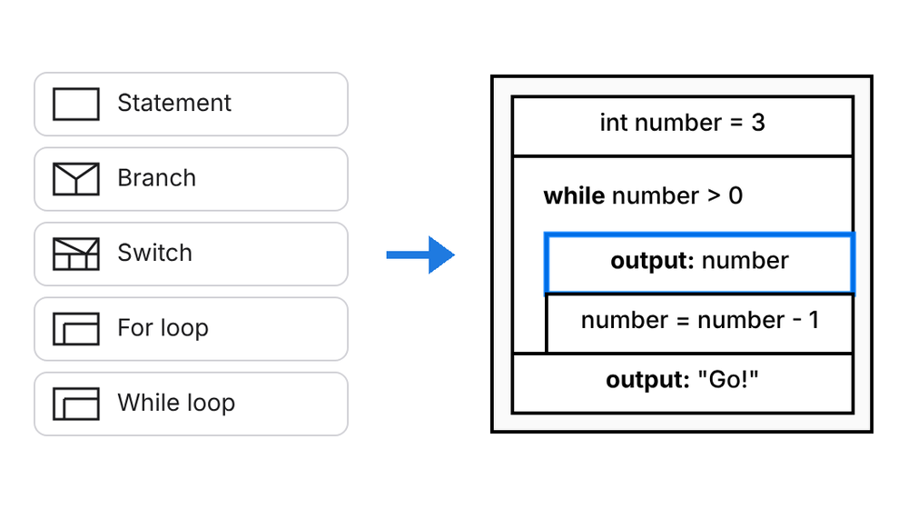
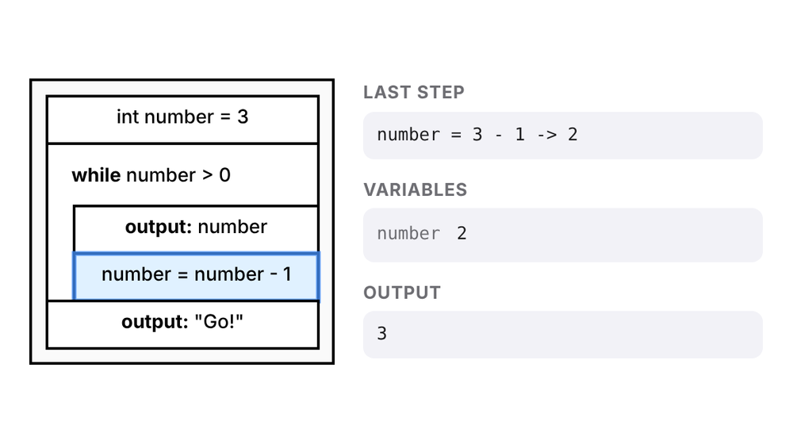

Build by dragging
Drag statements, branches, loops and switches from the palette into the diagram and type the text right in.
Free · no sign-up · nothing to install
With VisuStruct you design algorithms as Nassi-Shneiderman structograms: drag elements in, run them step by step and turn them into Java, Python or JavaScript code.
Works on computers, tablets and phones. Your files stay on your device.
How it works

Drag the building blocks into the structogram and describe each step in plain words or in code.

Start the simulator and follow block by block how the variables change.

Generate Java, Python or JavaScript and continue in your development environment.
Features
An editor made for the classroom: clear, precise and free of distractions.
Drag statements, branches, loops and switches from the palette into the diagram and type the text right in.
The simulator highlights the active block and shows variables and output, so you see at once whether your algorithm works.
VisuStruct turns your structogram into Java, Python and JavaScript. JavaScript runs right in the browser.
Save as PNG, SVG or PDF, or print directly, for worksheets and exams.
The interface speaks English, German, Spanish, Turkish, Ukrainian, Arabic and many more.
No account, no uploads. Your work is saved as a .visustruct file on your device.
Learning area
Next to the editor there is a learning area: lessons explain how to use the editor and what sequence, branches and loops are about. You try out what you read right next to it.
Your progress stays in your browser. The lessons are currently in German; more languages will follow.

More versions
All versions share the same .visustruct format. Start in the browser and continue in the app, or the other way around.

The native SwiftUI app from the App Store, also works offline.

Download as a .jar (Java required, e.g. Adoptium / Eclipse Temurin).
Download the Java appThink about logic and flow first. Then translate the same structure into the programming language of your choice, step by step and easy to follow.
Try it now